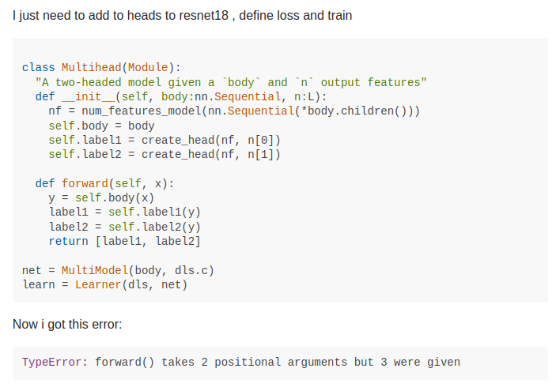

Answer; Likely no
As someone who has the entire fastai codebase mapped in his head, it’s not. And debugging requires getting deep into the weeds that most beginners get overwhelmed with
Nothing in the world is worth having or worth doing unless it means effort, pain, difficulty.
But there’s the issue of how do you not google every 2 seconds when something breaks
Remove the Training Wheels
Low-Level frameworks excel as a teaching vector * Build foundational knowledge * Errors are more clear * Clarify the top-level issues faster